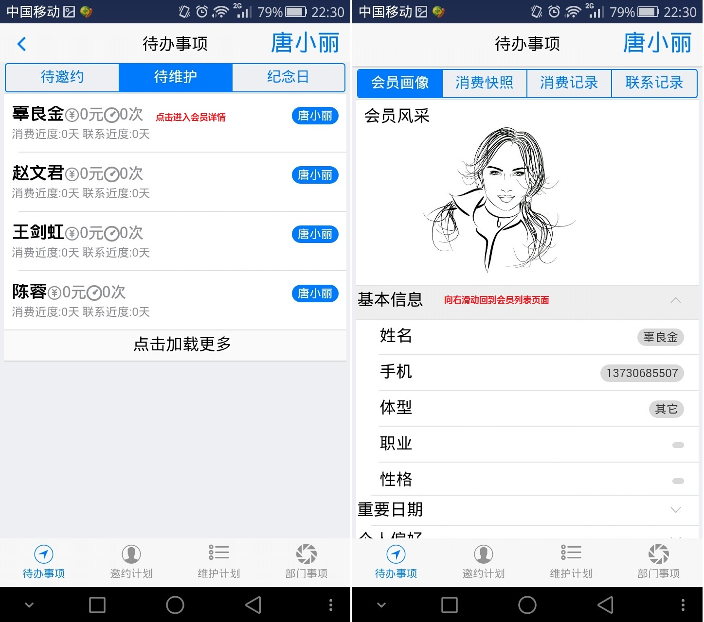
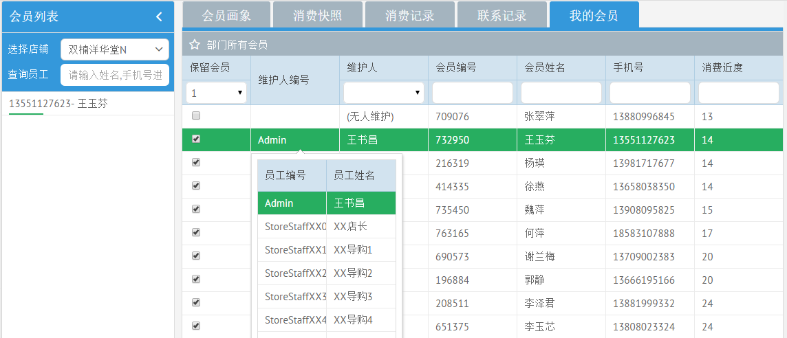
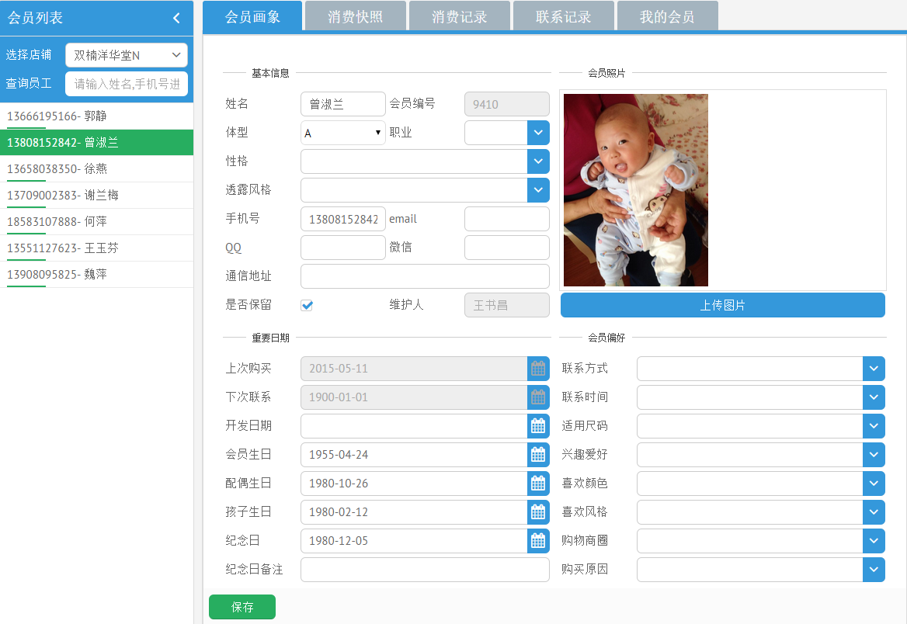
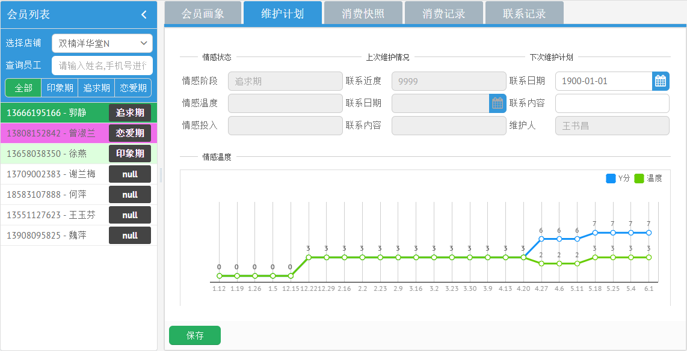
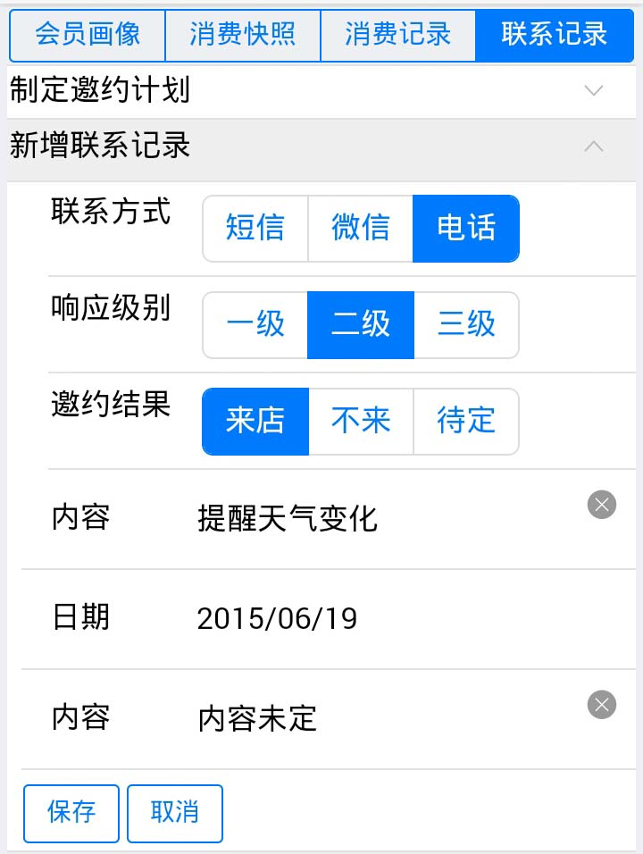

每天在手机上查看会员管理的"待办事项"，可以看到接下来三天需要邀约和维护的会员，以及接下来三天过生日(会员本人、配偶、结婚日)的会员。
- 进入人本会计->会员管理->待办事项，点击一个会员,进入会员详情页面。
- 查看此会员的各种信息，确定沟通策略。
- 在联系记录->新增联系记录中记录沟通结果，并计划下次联系的日期和内容

我们可以选择是否保留此会员(不再保留的会员相当于无效会员，未来不会进行维护)，还可以选择我所在店铺某个会员的维护人。
- 进入会员管理->我的会员，选择我所属的店铺
- 进入子页面我的会员，维护是否保留此会员，以及此会员的维护人
- 保留会员：勾选表示继续维护此会员，取消勾选表示不再维护此会员
- 更改会员维护人：点击维护人编号列，在下拉列表中选择维护人

我们可以维护单个会员的个人信息，如姓名，电话，联系方式，性格，各种偏好，消费习惯等。
- 进入会员管理->我的会员，选择我所属的店铺。
- 进入子页面会员画象，在左边的会员列表中选择一个会员,就可以维护会员的信息。
- 注意
- 如果刚刚维护了我的会员，那么刷新页面再选择店铺才会更新我的会员人数。
- 当上传的会员照片比较大时，请稍许等待。
- 请务必点击保存你修改的内容,包括上传的图片。

我们可以通过网页或手机制订周期性的情感维护计划，包括计划联系日期，联系内容，在手机端完成上次的维护计划后，可以马上制订下次的维护计划。
- 方法一：在网页版上制订维护计划
- 进入会员管理->维护计划，选择我所属的店铺。
- 进入子页面维护计划，在左边的会员列表中选择一个会员,就可以制订维护计划,即填写下次联系日期和内容。

- 方法二：在手机上制订维护计划(在记录本次联系内容的同时,确定下次维护计划)
- 进入会员管理->维护计划，选择我所属的店铺。
- 点击一个会员,进入子页面联系记录，打开新增联系记录，在此可以制订维护计划,即填写下次联系日期和内容。
.PNG)
我们可以通过网页或手机制订会员邀约计划，即确定邀约谁,什么时候邀约。
- 方法一：在网页版上制订维护计划
- 进入会员管理->邀约计划，选择我所属的店铺。
- 选择要制订计划的月份，设定预期会员消费金额（可以是一周，也可以是几天，但不可超过一个月），设定预计客单价增加的百分比
- 以上参数设定后，页面会提示各个象限预计成交金额，客单价和回购人数，可以人工调整各个值
- 点击各个象限的回购人数，下面的表格将显示这个象限的人数。
- 表格中的一个行记录就可以在各子页面中查看此会员消费快照,消费记录,联系记录。
- 根据这个会员的消费信息和联系情况,决定是否邀约此会员。如果决定邀约，那么在计划邀约中填上邀约日期。
- 也可以由店长根据计划回购人数确定各象限的邀约人数，并分配到各导购，然后各导购自己在手机端制订邀约计划。
.PNG)
- 方法二：在手机上制订维护计划
- 进入会员管理->维护计划，选择我所属的店铺。
- 点击一个会员,进入子页面联系记录，打开制订邀约计划，在此可以制订邀约计划,即填写下次联系日期和内容。
.PNG)
我们可以通过维护和邀约会员获得Y分。
- 打开手机"人本会计"系统会员管理，进入任一模块就会看到会员列表，选择一个会员进入会员详情。
- 进入子页面联系记录，点击新增联系记录,填写联系结果和下次联系日期和内容就可以获得Y分。
- 有回复的短信/微信获得Y0.5分
- 电话得分是短信/微信的一倍,恋爱期得分是印象期和追求期得分的一倍。
- 新增联系记录时,系统会自动转化为Y分。响应级别一级为没有回复，二三级有回复,目前二三级等同。
